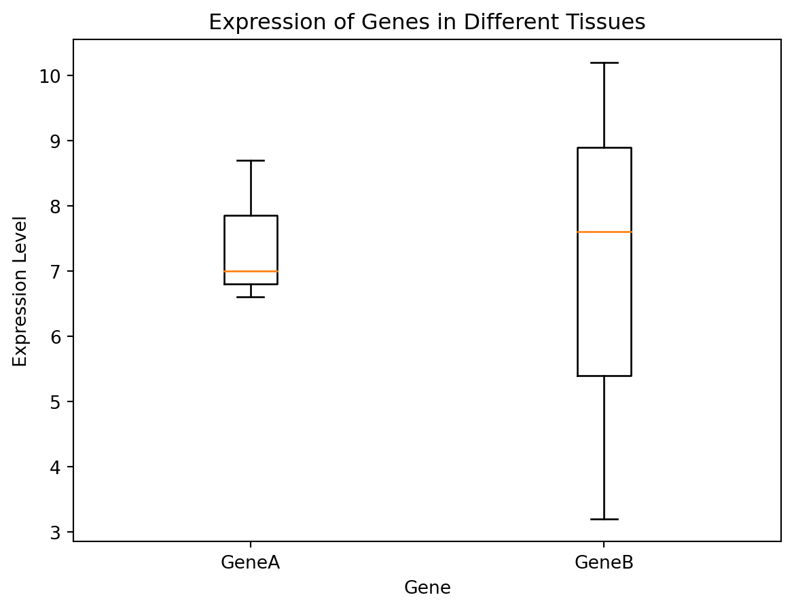
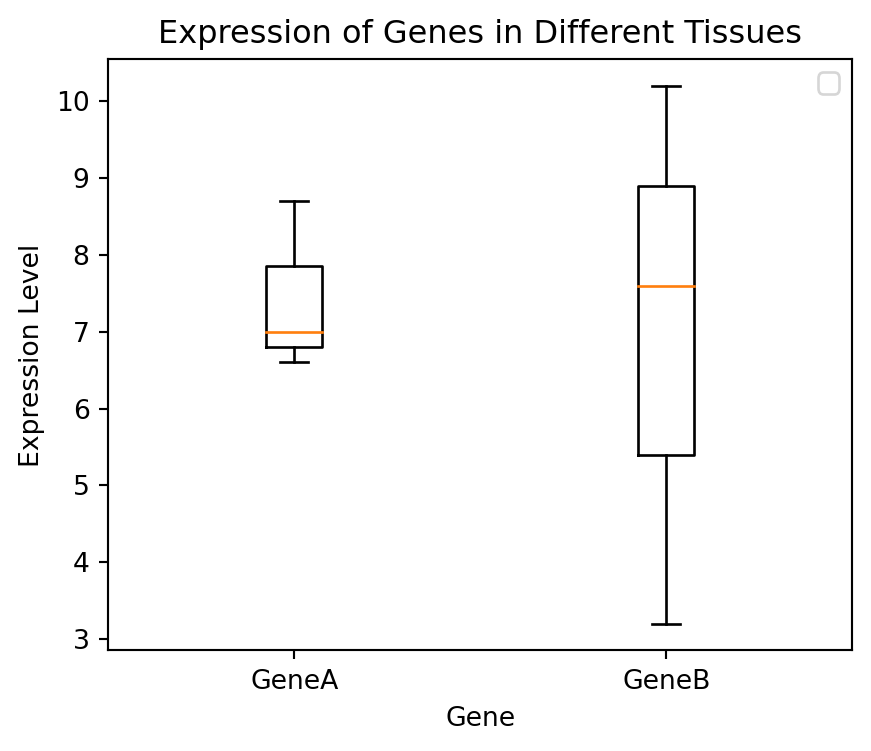
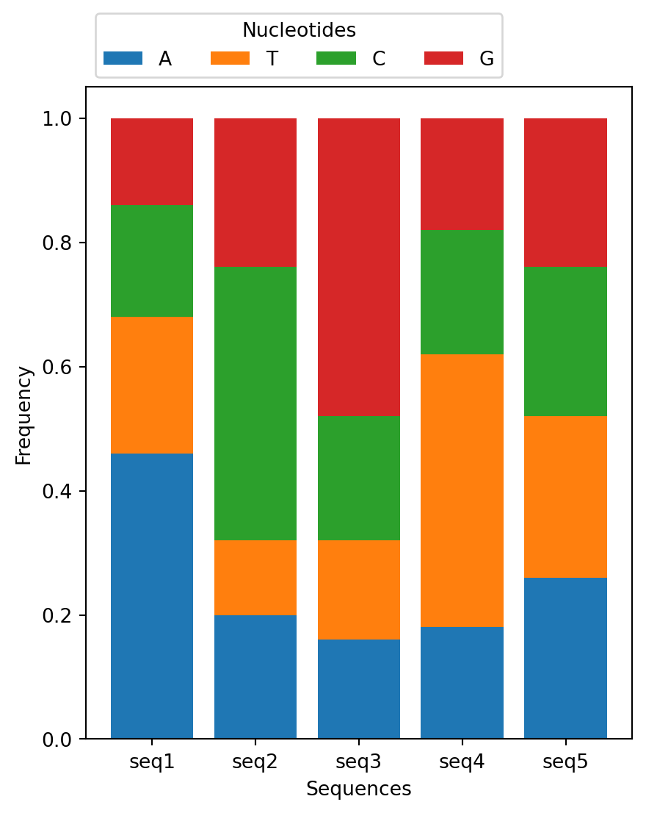

import os
os.getcwd()
os.listdir('exercise/data') ['sample.csv',
'my-figure-2.png',
'example.txt',
'my-figure.png',
'some_file.txt',
'example.fasta']import os
os.getcwd()
os.listdir('exercise/data') ['sample.csv',
'my-figure-2.png',
'example.txt',
'my-figure.png',
'some_file.txt',
'example.fasta']At the end of this class, you will be able to:
A function stores a piece of code that performs a certain task, and that gets run when called. It takes some data as input (parameters that are required or optional), and returns an output (that can be of any type).
We already learned how to run a predefined function in the last lesson. You need to write its name followed by parenthesis. Parameters are added inside the parenthesis as follow:
# round(number, ndigits=None)
x = round(number = 5.76543, ndigits = 2)
print(x)5.77To get more information about a function, use the help() function.
We will now learn how to create our own function.
In python, a function is declared with the keyword def followed by its name, and the arguments inside parenthesis. The next block of code, corresponding to the content of the function, must be indented. The output is defined by the return keyword.
def hello(name):
"""Presenting myself."""
presentation = f"Hello, my name is {name}."
return presentationtext = hello(name = "Valentine")
print(text)Hello, my name is Valentine.As you may have noticed, you can also add a description of the function directly after the function definition. It is the message that will be shown when running help(). As it can be along text over multiple lines, it is common to put it inside triple quotes """.
help(hello)Help on function hello in module __main__:
hello(name)
Presenting myself.
You can have several arguments. They can be mandatory or optional. To make them optional, they need to have a default value assigned inside the function definition, like so:
def hello(name, french = True):
"""Presenting myself."""
if french:
presentation = f"Bonjour, je m'appelle {name}."
else:
presentation = f"Hello, my name is {name}."
return presentationThe parameter nameis mandatory, but french is optional.
hello("Valentine")"Bonjour, je m'appelle Valentine."hello(french = False)--------------------------------------------------------------------------- TypeError Traceback (most recent call last) Cell In[8], line 1 ----> 1 hello(french = False) TypeError: hello() missing 1 required positional argument: 'name'
Reminder: if you provide the parameters in the exact same order as they are defined, you don’t have to name them. If you name the parameters you can switch their order. As good practice, put all required parameters first.
hello(french = False, name = "Valentine")'Hello, my name is Valentine.'hello("Valentine", False)'Hello, my name is Valentine.'If no return statement is given, then no output will be returned, but the function will still be run.
def hello(name):
"""Presenting myself."""
print("We are inside the 'hello()' function.")
presentation = f"Hello, my name is {name}."print(hello("Valentine"))We are inside the 'hello()' function.
NoneThe output can be of any type. If you have a lot of things to return, you might want to return a list or a dict for example.
def multiple_of_3(list_of_numbers):
"""Returns the number that are multiple of 3."""
multiples = []
for num in list_of_numbers:
if num % 3 == 0:
multiples.append(num)
return multiples
multiple_of_3(range(1, 20, 2))[3, 9, 15]This could be written as a one-liner.
def multiple_of_3(list_of_numbers):
"""Returns the number that are multiple of 3."""
multiples = [num for num in list_of_numbers if num % 3 == 0]
return multiples
multiple_of_3(range(1, 20, 2))[3, 9, 15]Write a function called nucl_freq to compute nucleotide frequency of a sequence. Given a sequence as input, it outputs a dictionnary with keys being the nucleotides A, T, C and G, and values being their frequency in the sequence.
With the input given below, the output should be:
def ...
# Your code here
nucl_freq("ATTCCCGGGG"){'A': 0.1, 'C': 0.3, 'G': 0.4, 'T': 0.2}A python package contains a set of function to perform specific tasks.
A package needs to be installed to your computer one time.
You can install a package with pip. It should have been automatically installed with your python, to make sure that you have it you can run:
#| eval: false
# In Linux/MacOS
python -m pip --version
# In Windows
py -m pip --versionIf it does not work, check out pip documentation.
To install a package called pandas, you must run:
#| eval: false
# In Linux/MacOS
python -m pip install pandas
# In Windows
py -m pip install pandasTo get more information about pip, check out the full documentation.
Installing a package is done outside of the python interpreter, in command line in a terminal.
When you wish to use a package in a python script, you’ll need to import it, by writing inside of you script:
import pandasPandas is a package used to work with data sets, in order to easily clean, manipulate, explore and analyze data.
Pandas provides two types of classes for handling data:
Series: a one-dimensional labeled array holding data of any type such as integers or strings. It is like a column in a table.# If nothing else is specified, the values are labeled with their index number (starting from `0`).
myseries = pandas.Series([1, 7, 2], index = ["x", "y", "z"])
print(myseries)x 1
y 7
z 2
dtype: int64DataFrame: a two-dimensional data structure that holds data like a two-dimension array or a table with rows and columns. It is like a table.data = {
"calories": [420, 380, 390],
"duration": [50, 40, 45]
}
df = pandas.DataFrame(data)
print(df) calories duration
0 420 50
1 380 40
2 390 45You can also create a DataFrame from a file.
# Make sure this is the correct path for you! You are in the directory from where you execute the script.
df = pandas.read_csv('exercise/data/sample.csv')
print(df) Gene Expression_Level Tissue
0 GeneA 8.7 Heart
1 GeneB 3.2 Heart
2 GeneA 7.0 Brain
3 GeneB 10.2 Brain
4 GeneA 6.6 Liver
5 GeneB 7.6 LiverYou get access to the index and column names with:
df.columns
df.indexRangeIndex(start=0, stop=6, step=1)You can rename index and column names:
df = df.rename(index={0: 'a', 1: 'b', 2: 'c', 3: 'd', 4: 'e', 5 : 'f'})
df.indexIndex(['a', 'b', 'c', 'd', 'e', 'f'], dtype='object')You can select rows:
# Select one row by its label
print(df.loc[['a']])
# Select one row by its index
print(df.iloc[[0]])
# Select several rows by labels
print(df.loc[['a','c']])
# Select one row by index
print(df.iloc[[0,2]]) Gene Expression_Level Tissue
a GeneA 8.7 Heart
Gene Expression_Level Tissue
a GeneA 8.7 Heart
Gene Expression_Level Tissue
a GeneA 8.7 Heart
c GeneA 7.0 Brain
Gene Expression_Level Tissue
a GeneA 8.7 Heart
c GeneA 7.0 BrainYou can select columns:
# Select one column by label
df['Tissue'] # Series
df[['Tissue']] # DataFrame
# Select several columns
df[['Gene','Expression_Level']]
# Select several columns by index
df.iloc[:,[0,1]]| Gene | Expression_Level | |
|---|---|---|
| a | GeneA | 8.7 |
| b | GeneB | 3.2 |
| c | GeneA | 7.0 |
| d | GeneB | 10.2 |
| e | GeneA | 6.6 |
| f | GeneB | 7.6 |
You can select rows and columns as follows:
df.loc[['b'], ['Gene','Expression_Level']]| Gene | Expression_Level | |
|---|---|---|
| b | GeneB | 3.2 |
You can filter based on a condition as follows:
df[df['Expression_Level'] > 6]| Gene | Expression_Level | Tissue | |
|---|---|---|---|
| a | GeneA | 8.7 | Heart |
| c | GeneA | 7.0 | Brain |
| d | GeneB | 10.2 | Brain |
| e | GeneA | 6.6 | Liver |
| f | GeneB | 7.6 | Liver |
To explore the data set, use the following methods:
df.info()<class 'pandas.core.frame.DataFrame'>
Index: 6 entries, a to f
Data columns (total 3 columns):
# Column Non-Null Count Dtype
--- ------ -------------- -----
0 Gene 6 non-null object
1 Expression_Level 6 non-null float64
2 Tissue 6 non-null object
dtypes: float64(1), object(2)
memory usage: 364.0+ bytesdf.describe()| Expression_Level | |
|---|---|
| count | 6.000000 |
| mean | 7.216667 |
| std | 2.358319 |
| min | 3.200000 |
| 25% | 6.700000 |
| 50% | 7.300000 |
| 75% | 8.425000 |
| max | 10.200000 |
df.head()| Gene | Expression_Level | Tissue | |
|---|---|---|---|
| a | GeneA | 8.7 | Heart |
| b | GeneB | 3.2 | Heart |
| c | GeneA | 7.0 | Brain |
| d | GeneB | 10.2 | Brain |
| e | GeneA | 6.6 | Liver |
df.sort_values(by="Gene")| Gene | Expression_Level | Tissue | |
|---|---|---|---|
| a | GeneA | 8.7 | Heart |
| c | GeneA | 7.0 | Brain |
| e | GeneA | 6.6 | Liver |
| b | GeneB | 3.2 | Heart |
| d | GeneB | 10.2 | Brain |
| f | GeneB | 7.6 | Liver |
df['Expression_Level'].mean()
df.groupby("Gene")[['Expression_Level']].mean()| Expression_Level | |
|---|---|
| Gene | |
| GeneA | 7.433333 |
| GeneB | 7.000000 |
To get more information on how to use pandas, check out:
Create a pandas DataFrame from the file containing the frequency of each nucleotide per sequences (exercise/data/example.txt).
Make sure that df.index contains the name of the sequences, and df.columns contains the nucleotides.
Use pandas.melt() (see the doc) to get the data in the following format:
nucl freq
Seq
seq1 A 0.46
seq2 A 0.20
seq3 A 0.16
seq4 A 0.18
seq5 A 0.26
seq1 T 0.22
seq2 T 0.12
...Get the mean value of all nucleotide frequencies.
Get the mean value of frequencies per nucleotide.
Filter to remove values of seq1.
Recompute the mean value of frequencies per nucleotide.
Matplotlib is a package to create visualizations in Python widely used in science.
To shorten the name of the package when we call its functions, we can import it as follows:
import matplotlib.pyplot as plt
df = pandas.read_csv('exercise/data/sample.csv')
# The data for GeneA and GeneB is extracted from the DataFrame 'df'
serieA = df[df['Gene'] == 'GeneA']['Expression_Level']
serieB = df[df['Gene'] == 'GeneB']['Expression_Level']
# Create a new figure
fig = plt.figure()
# Create a boxplot showing the expression levels of GeneA and GeneB
plt.boxplot([serieA, serieB], # List of series
labels=['GeneA', 'GeneB'])
# Set the label for the x-axis
plt.xlabel('Gene')
# Set the label for the y-axis
plt.ylabel('Expression Level')
# Set the title of the plot
plt.title('Expression of Genes in Different Tissues')
# Display the boxplot
plt.show()
# Save the plot as a PNG file with a resolution of 300 dots per inch (dpi)
# The file will be saved in the specified location
fig.savefig('exercise/data/my-figure.png', dpi=300)
The following code is equivalent.
# Create a new figure
fig, ax = plt.subplots(1, figsize=(5, 4))
ax.boxplot([serieA, serieB], # List of series
labels=['GeneA', 'GeneB'])
ax.set_xlabel('Gene')
ax.set_ylabel('Expression Level')
ax.set_title('Expression of Genes in Different Tissues')
ax.legend()
plt.show()
# Save the plot as a PNG file with a resolution of 300 dots per inch (dpi)
# The file will be saved in the specified location
fig.savefig('exercise/data/my-figure-2.png', dpi=300)No artists with labels found to put in legend. Note that artists whose label start with an underscore are ignored when legend() is called with no argument.
The first way of plotting is function-oriented, and the second is object-oriented. You might encounter both styles of coding.

Many visualizations are available (static, animated, interactive). For more information, check out:
Create a script that gets nucleotide frequency data from a file in the format of exercise/data/example.txt, and visualizes it using Matplotlib and Pandas.
Your script should read the data, create a stacked bar chart showing the nucleotide frequencies for each sequence, and label the axes appropriately. Here’s the expected plot:

There are MANY packages available, here’s a short list of some that might interest you:
| Package | Usage | Example of usage |
|---|---|---|
| BioPython | Computational molecular biology | Sequence handling, access to NCBI databases |
| NumPy | Numerical arrays | Data manipulation, mathematical operations, linear algebra |
| Seaborn | High-level interface for drawing plots | Data visualization, statistical graphics |
| HTSeq | High throughput sequencing | Quality and coverage, counting reads, read alignment |
| Scanpy | Single-Cell Analysis | Preprocessing, visualization, clustering |
| SciPy | Mathematical algorithms | Clustering, ODE, Fourier Transforms |
| Scikit-image | Image processing | Image enhancement, segmentation, feature extraction |
| Scikit-learn | Machine learning | Classification, regression, clustering, dimensionality reduction |
| TensorFlow and PyTorch | Deep learning | Neural networks, natural language processing, computer vision |

Here are a couple of tips:
You can follow some free tutorials on:
Finally, you should able to use Github Copilot (AI coding assistant), as it is free for students: https://education.github.com/benefits.
A python conference organized by the AFPy (Association Francophone Python) is held in Strasbourg in the end of October 2024!
Here are some references and ressources that inspired this class: